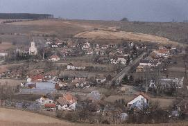
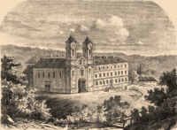
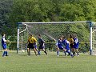
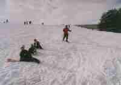
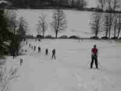

|  | Nachádza sa v juhovýchodnej časti Novozámockého okresu včlenená do vŕškov Pohronskej pahorkatiny. Jej nadmorská výška je v priemere 240 metrov. Takmer celá obec je ovenčená listnatými lesmi. Pahorkatinové okolie a vklinená vodná plocha rybníka vytvára malebný pohľad na dedinu. Táto prírodná scenéria tvorí nádhernú kulisu pre návštevníkov obce v každom ročnom období, poskytujúce pokojné a nerušené prežitie dovolenkového obdobia. |
|
V súčasnosti žije v obci 325 obyvateľov so solídnou občianskou vybavenosťou: materská škola, verejný vodovod a plynovod, predajňa potravín a rozličného tovaru, pohostinstvo. Dominantami obce sú kultúrny dom a kostol postavený v r. 1735. |
|
| Obcou vedie cyklotrasa, ktorá
prechádza atraktívnym prírodným prostredím. Tieto trasy je možné
využívať aj na pešie túry. Najatraktívnejšou dominantou sú ruiny
kláštora Paulínov - Mariačalád, nachádzajúcov sa na trase do
Podhájskej. Členitý terén poskytuje možnosť nádheného výhľadu na
okolitú panoramu popredkávanú lesnými porastami. (Fotogaléria z okolia Čiech a ruín kláštora: tu). |
 |
| Verejnosti je k dispozícii aj areál futbalového ihriska, nohejbalové a volejbalové ihrisko. Pre rybárov je počas rybárskej sezóny prístupný rybník s násadou kaprov, ktorý môžu využívať na rybolov. |  |
|  | Obec Čechy vlastní 200m dlhý lyžiarsky
vlek, ktorý je v prevádzke pri vhodných snehových podmienkach
denne s možnosťou večerného lyžovania. Na lyžiarskom svahu je
taktiež vybudovaný systém umelého zasnežovania. Ceny lístkov
bývajú rôzne, obyčajne zhruba 100 Sk na deň. Avšak pri dobrých
snehových podmienkach aj terény v okolí obce môžu výborne poslúžiť na
bežecké lyžovanie. |
|  | Okrem toho sa oproti lyžiarskemu svahu nachádza veľká vodná plocha rybníka, ktorá je v zimných mesiacoch zamrznutá, čím poskytuje vhodný priestor na korčulovanie i hokej. |